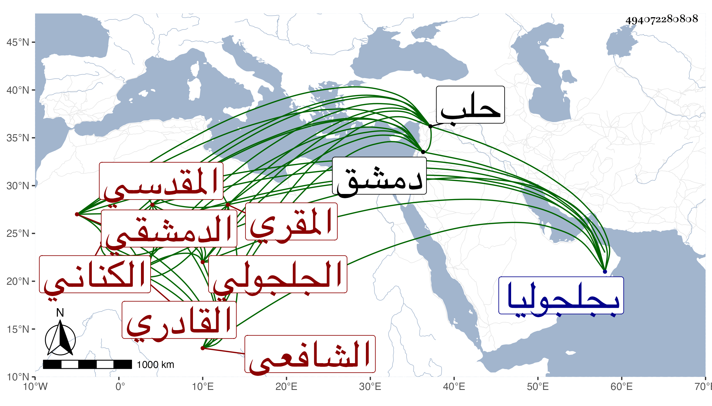

0902Sakhawi.DawLamic.ITO20230111-ara1.EIS1600.494072280808
Biography ID: 494072280808
215
عمران بن إدريس بن معمر بالتشديد الزين أبو موسى الكناني الجلجولي المقدسي الدمشقي الشافعي القادري المقري . ولد سنة أربع وثلاثين وسبعمائة بجلجوليا وسمع من ابن أميلة والصلاح بن أبي عمر وأحمد بن النجم ومحمد بن المحب عبد الله المقدسي ومما سمعه منه جزء ابن بخيت وعلى الأول الترمذي وعلى الثاني مشيخة الفخر ولازم التاج السبكي وغيره في الفقه وغيره وأخذ القراءات عن ابن اللبان وابن السلار وتميز فيها وأقرأ ، وحصل له ثقل في لسانه فكان لا يفصح بالكلام ويجيد القراءة حسنا وكان مع علمه بالقراءات فاضلا ظريفا أكولا جدا ذا نظم لكنه غير طائل ويحج على قضاء الركب الشامي فقير النفس لا يزال يظهر الفاقة وإذا حصلت له وظيفة نزل عنها ، غير محمود في قضائه ، مات بدمشق أيام الحصار في رجب أو شعبان سنة ثلاث . ذكره شيخنا في أنبائه والتقي بن فهد وابن خطيب الناصرية وقال أنه من بقايا الشيوخ كتب عنه البرهان الحلبي لما قدم حلب ، وأرخ شيخنا مولده في معجمه بعد الأربعين والمعتمد الأول وكأنه رام أن يكتب بعد الثلاثين فسبق القلم وزاد في نسبة بعد إدريس أحمد وقال : أجاز لي ولم نجد له شيئا على قدر سنه ولم يكن محمودا ، وذكره المقريزي في عقوده فقال عمران ابن موسى بن أحمد بن إدريس بن معمر ، وتبع شيخنا في كونه ولد بعد الأربعين وجزم في وفاته برجب قال : وكان له سماع من محمد بن عبد الحميد المقدسي كذا قال .
